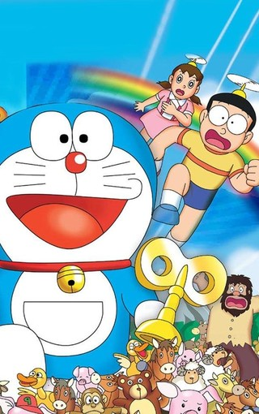
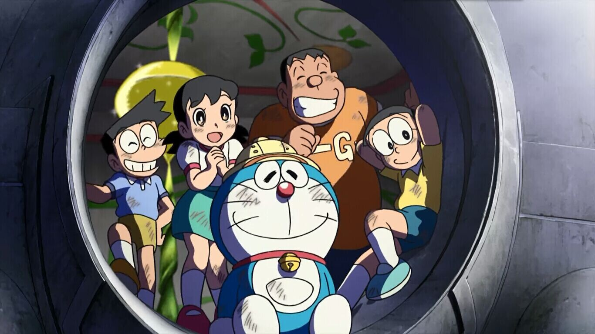
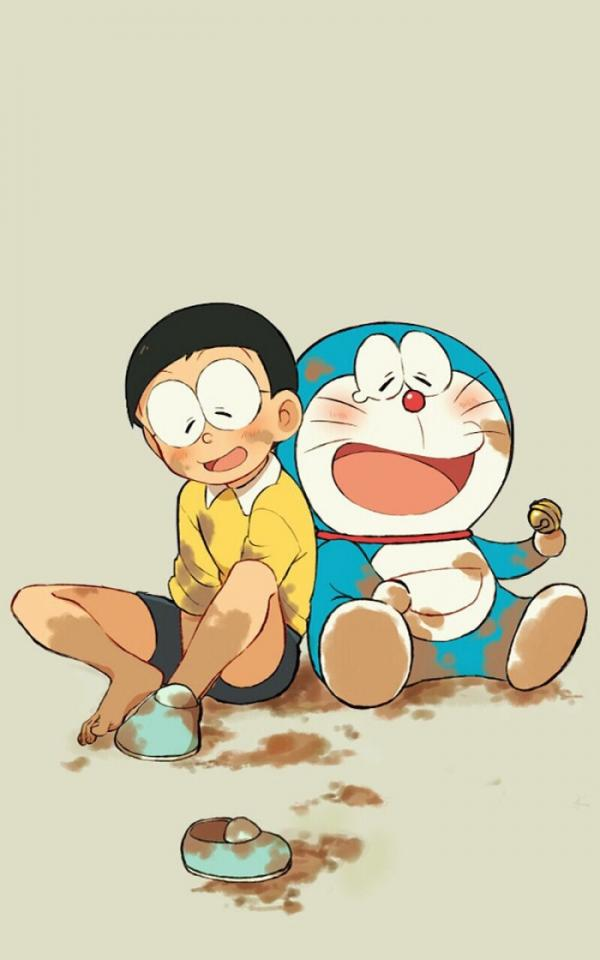
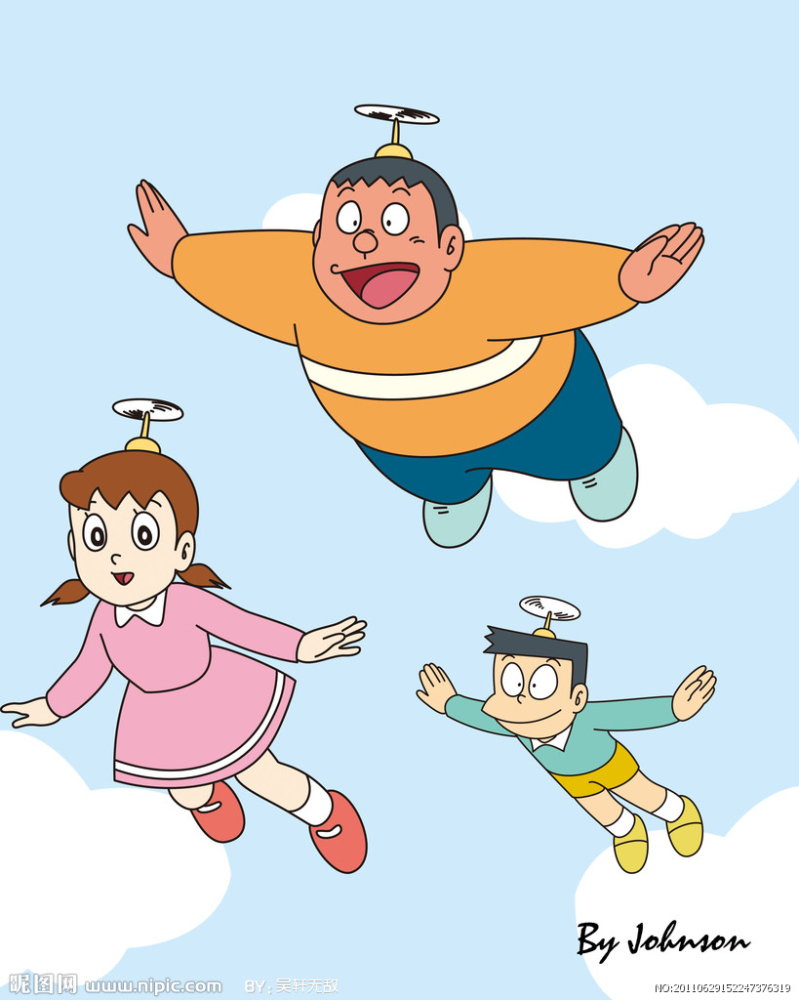
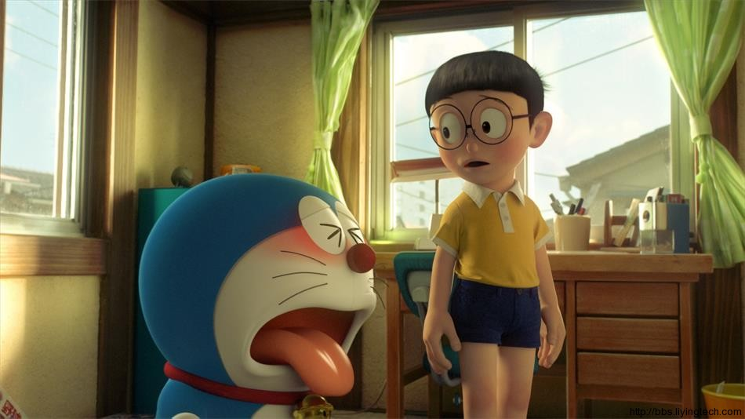
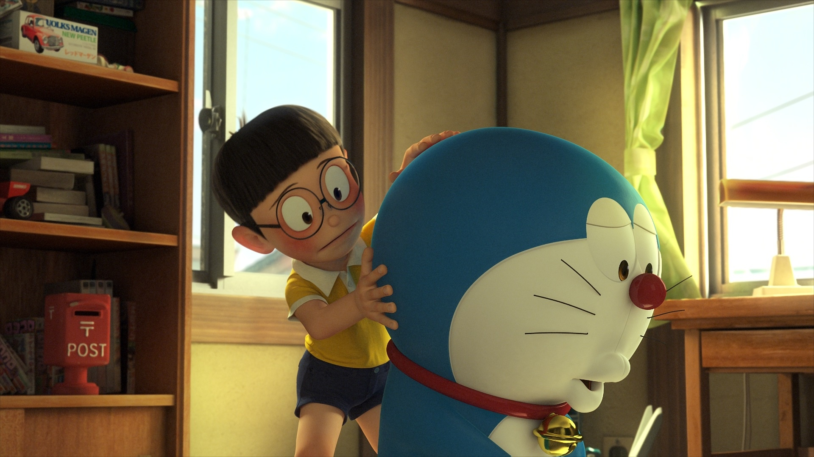

藤子·F·不二雄(1933年12月1日—1996年9月23日),日本男性漫画家,小学馆的代表漫画家之一,代表作《哆啦A梦》《Q太郎》《小超人帕门》《超能力魔美》。原名藤本弘,出生于日本富山县的高冈市，毕业于富山县立高冈工艺高等学校电气科。曾经长期与另一位著名日本漫画家安孙子素雄(笔名藤子不二雄A)以藤子不二雄作为共用的笔名,先后在艰难的生存环境下画了十多年,并未造成太大热潮,直至实际上可以算是两个人最后的合作《Q太郎》。

1947年受到漫画大师手冢治虫的启发,立志成为儿童漫画家,1949年3月看过迪士尼的《白雪公主》,可说是启发了藤子成为漫画家的原动力。1951年12月 与安孙子素雄一起向'每日小学生新闻'投稿处女作《天使之玉》并被发表。1964年凭《Q太郎》一炮走红,从此奠定了他在日本漫画界的重要地位,而他的代表作《哆啦A梦》更掀起了无法抵挡的旋风,成为了成千上万儿童心目中永恒的经典,《哆啦A梦》为藤本弘的单人作品。1993年,为了纪念藤本弘的成就,在日本的高冈市建成了“哆啦A梦散步道”。1996年9月23日凌晨02:10,藤本弘因肝衰竭逝世,享年63岁。

生活在日本东京的野比大雄，是一个学习不上进,日常迷迷糊糊并且饱受同学欺负的男孩。他的性格不仅左右着自己的事业和婚姻还对未来子孙产生莫大的影响。为此,大雄孙子的孙子世修带着猫型机器人哆啦A梦乘坐时光机突然来访,期望彻底改变大雄及整个家族的命运。为了什么都做不来的大雄,世修送了猫型机器人一哆啦A梦来现代。笨笨的野比大雄原本自己开了间公司,但很不幸的倒闭，之后剩下了一屁股债务，子孙们吃了莫大的苦。

于是,野比世修才打算送哆啦A梦到现代,打算改变大雄的未来,并且为哆啦A梦设定了完成程式,如果野比大雄不幸福的话,哆啦A梦就不能回22世纪。哆啦A梦于是开始勉勉强强的协助野比大雄的目常生活。虽然刚开始不太习惯,但两个人的关系也日渐变的紧密。得知野比大雄的梦想是打算与梦中情人的同班同学源静香结婚以后,哆啦A梦就想尽办法要帮助野比大雄获得静香的芳心。正当源静香总算答应了野比大雄的求婚的时候。。。。

野比大雄，一个单纯天真的个乐天派,性格懒惰，天生迟钝，什么时候都慢半拍，迟到纪录和罚站纪录等等屡次创造新纪录。学习成绩很糟糕,运动神经迟钝，做任何事情都毛手毛脚的，智力和体力只有小学二年级的水平,性格懦弱,胆子很小,经常受人欺负,遇到问题只知道逃避。意志力薄弱,没长性,虽然经常下决心,但总是半途而废,没有一次坚持到底,决心坚持时间最高纪录是48分23秒。擅长睡觉,只要想睡什么时候都能睡着,睡着仅需要0.93秒。

哆啦A梦,名字的意思是铜锣卫门。心肠好，乐于助人，做事很拼命，但却心肠软。每次大雄遇到困难，他总会帮大雄。但有时会用愚蠢的方法来帮助大雄。当它吃不到铜锣烧或人们叫他狸猫时，脾气会非常暴躁。他原来是和妹妹一样,黄色的,而且有耳朵,一天,小世修为了感谢哆啦A梦照顾他,做了一个哆啦A梦的泥娃娃,可就是耳朵老做不好,就用未来世界的工具老鼠机器人修改泥娃娃,可是小世下错了指令,那个老鼠机器人就把哆啦A梦的耳朵咬坏了